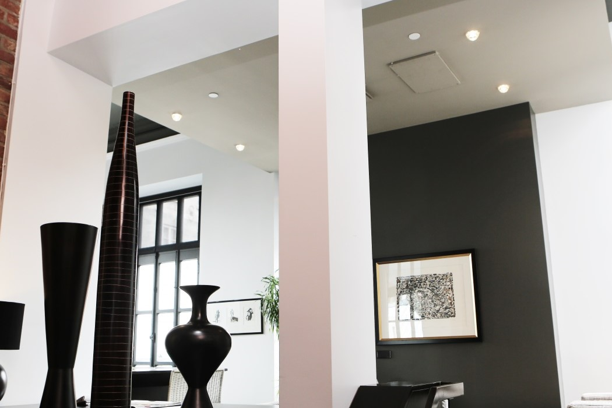

Hausverwaltung in Witten
Immobilien. Persönlich betreut.
Hausverwaltung Matrong verwaltet nach eigener Website Mietshäuser, Fremdobjekte und Eigentümergemeinschaften in Witten und weiteren Städten der Region.
Leistungen entdecken ↓
20+Jahre Unternehmensgeschichte laut Website
5öffentlich genannte Städte der Verwaltungsregion
WittenSitz: Nordstraße 2 · 58452 Witten
Dienstleistungen
Verwaltung, die weiterdenkt.
Die Website nennt Verwaltung und Betreuung vom kaufmännischen bis zum technischen Bereich. Der Rebuild ordnet die bestätigten Aufgaben verständlich, ohne zusätzliche Leistungsversprechen zu erfinden.
Betriebs- & Heizkostenabrechnung
Komplette Buchhaltung
Technische Kontrolle & Betreuung
Forderungsmanagement
Eigentümergemeinschaften
Regional verwurzelt
Verantwortung für Immobilien.
Hausverwaltung Matrong nennt Witten, Bochum, Dortmund, Herne und Köln als Verwaltungsregion. Im Mittelpunkt stehen nach eigener Aussage die individuelle Objektbetreuung und der persönliche Kontakt zu Mietern und Eigentümern.
Kontakt
Ihr Anliegen, direkt besprochen.
Für einen Termin bittet Hausverwaltung Matrong öffentlich um vorherige Absprache.
AnschriftNordstraße 2
58452 Witten
58452 Witten
GeschäftszeitenMo–Do 08:00–16:30
Fr 08:00–15:00
Fr 08:00–15:00
Veröffentlichung[NEEDS INPUT: Kontaktweg & Rechtstexte]
Vor Veröffentlichung sind finale Kontaktangaben, Datenschutz und Impressum zu prüfen und freizugeben.